Bemedico, a brand focused on the medical industry, executed a highly personalized end-of-year campaign by creating custom gifts for both customers and team members. The key to their campaign was the precise use of their signature purple color and embossed branding, ensuring that the gifts were perfectly aligned with their brand identity. These custom gifts, distributed to medical professionals such as surgeons, were not only well-received but also reinforced Bemedico's commitment to quality and attention to detail. The campaign successfully connected with their target audience, leaving a positive and lasting impression.
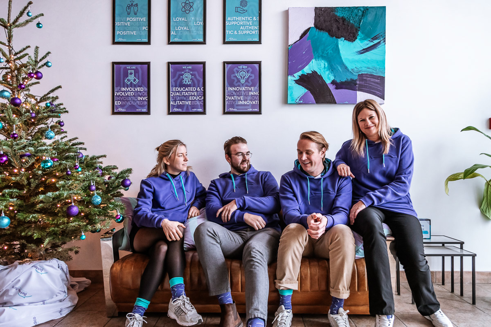PGS launched an innovative end-of-year campaign by setting up a custom online webshop for their employees. This platform featured a variety of branded items, including festive Christmas jumpers, allowing employees to choose what resonated with them most. Each employee was given coins to spend on the items of their choice, fostering a sense of personalization and ownership. The campaign had a significant impact on enhancing the employer brand, offering employees the flexibility to express their individuality while staying connected to the brand. The success of this campaign led to its continuation, with new seasonal items added every six months.

New York Pizza leveraged the power of influencers to make their mark during the holiday season. They distributed branded Christmas jumpers to key influencers across the Netherlands, encouraging them to wear the jumpers on social media. The aim was to associate the joy of the holiday season with the pleasure of enjoying pizza, even during festive gatherings. The campaign successfully kept New York Pizza top of mind for consumers, driving engagement and encouraging holiday orders, while also strengthening the brand's connection with its audience through the joyful spirit of the holidays.
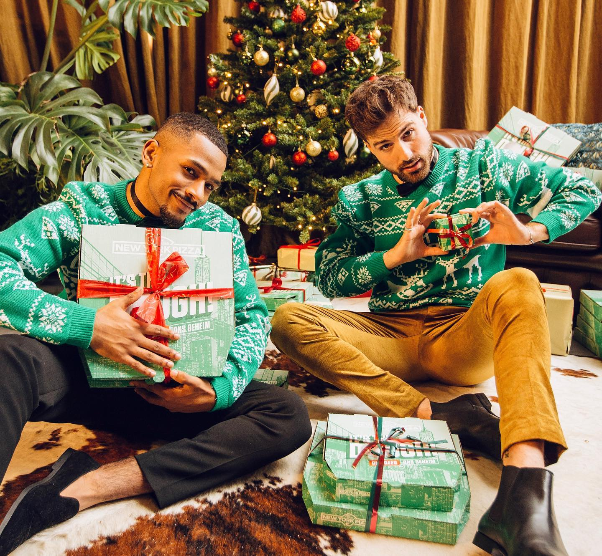Interstellar, known for its strategy of acquiring various specialized agencies, used the end-of-year gifting season as an opportunity to unify these entities under the Interstellar brand. They launched a custom webshop where employees from all the acquired companies could use coins to order items from a curated collection. This approach ensured that each agency's employees received gifts that resonated with them personally, while also minimizing waste. The campaign played a significant role in building a cohesive brand identity across the newly unified company, strengthening the sense of belonging among employees.
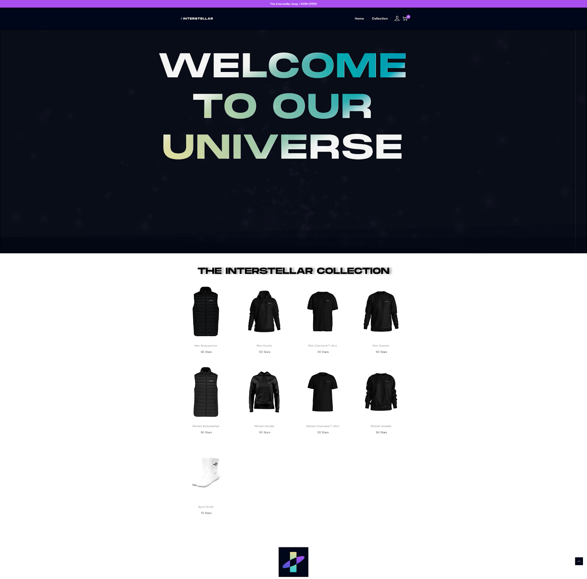NMBS, Belgium's National Railway, aimed to brighten the often dreary winter commutes with a festive collection of branded beanies, scarves, gloves, and socks. The collection was designed to bring coziness to the daily train journey, making the NMBS brand more accessible and emotionally resonant. The campaign garnered significant media attention, resulting in a sold-out collection and a notable boost in both employee satisfaction and customer sentiment. The positive response also translated into a 24-point increase in the NPS score, making the campaign a resounding success.
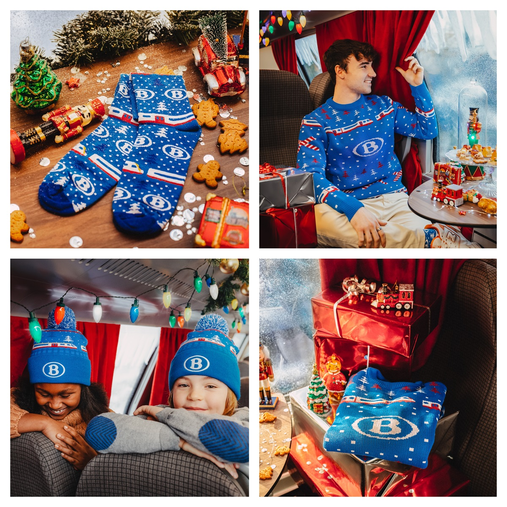Bol.com, one of the largest e-commerce platforms in the Benelux, created a unique and thoughtful gift for their team during the hectic holiday season. They designed fully custom houseware slippers, inspired by the comfort of hotel slippers but elevated with premium materials and vibrant 3D branding. These high-quality slippers were a way for employees to relax and unwind after the busy Christmas shopping period, reinforcing the company's appreciation for its hard-working team. The campaign was a fun and creative approach to employee branding, leaving a positive impact on morale.
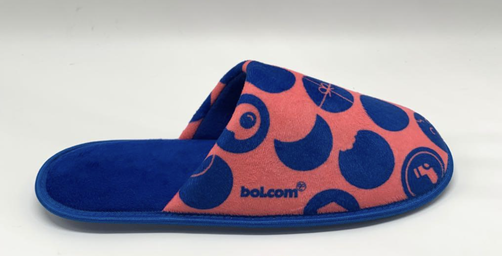Aertssen, a rapidly growing construction conglomerate, took employee gifting to the next level with a fully custom, high-quality jacket. The jackets were subtly branded and featured custom inner labels that told the story behind the gift. This thoughtful approach not only provided employees with a luxurious item they could wear proudly but also significantly elevated the perception of the Aertssen brand. The campaign was a statement in employee branding, reinforcing the company's commitment to its team and leaving a lasting impression that extended beyond the holiday season.
For their end-of-year campaign, Riot Games sought to combine the festive spirit with increased brand visibility within the gaming community. Focusing on their hit game, Valorant, they developed a unique influencer campaign centered around custom Christmas jumpers. These jumpers, intricately knitted in Valorant's branding, were packaged in bespoke boxes with silk paper and sent to 200 influencers across Europe. The goal was to have these influencers wear the jumpers during their Twitch streams, creating a form of native advertising that felt natural and engaging to their audience. The campaign successfully generated buzz within the Twitch community, linking the seasonal joy of the holidays with the excitement of gaming, and significantly boosting Valorant's brand presence during the festive season.
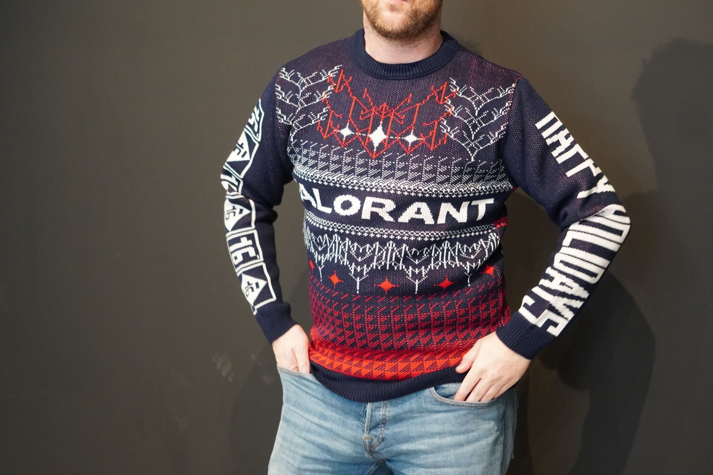Bequiet, a high-tech company known for its ultra-quiet computer components, embraced the holiday spirit by launching a full Christmas collection, with the Christmas jumper as the standout item. The campaign was designed to spread festive cheer and foster a sense of community among their audience. By creating fun and engaging content around the collection, Bequiet not only reinforced its brand image as cool and innovative but also strengthened the bond with its community. The campaign effectively combined high-tech branding with the warmth of the holiday season, making a lasting impact on their audience.
Gediflora, a global leader in the flower industry, took a unique approach to their end-of-year campaign by focusing on the personal connections of their employees. Instead of giving gifts directly to employees, Gediflora allowed them to send gifts to their loved ones. Employees could choose recipients for a custom Christmas box containing a beanie, scarf, and personalized note. This campaign not only spread holiday cheer but also strengthened the bond between the company and its employees by involving their families in the festive spirit, creating a wholesome and memorable experience.
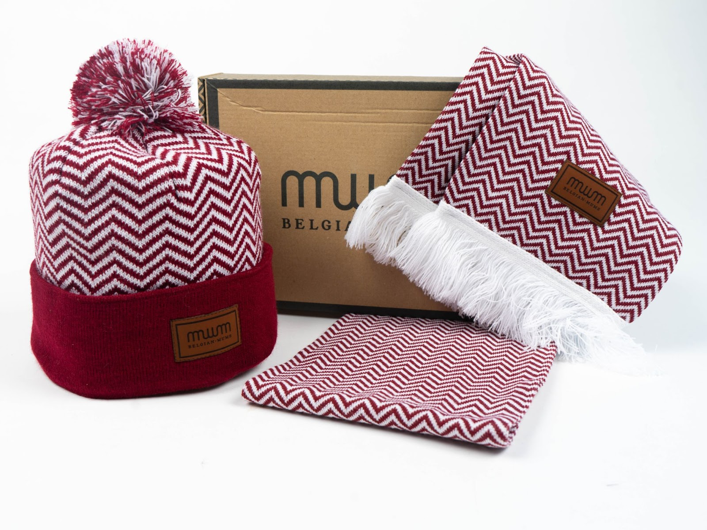Unilin, a company with a vast network of distributors, focused their campaign on deepening these key relationships. They created a luxurious gift set featuring scarves, beanies, and gloves, which were distributed by sales representatives during customer visits. This campaign not only provided a festive reason for sales reps to connect with their customers but also reinforced Unilin's commitment to their partners during the holiday season. The carefully curated gift sets served as a tangible reminder of the strong partnerships that Unilin values throughout the year.
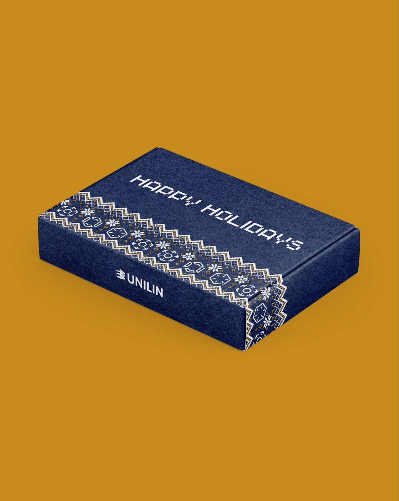Rotachock, a company specializing in industrial components, brought a playful twist to their end-of-year campaign by creating a high-end gift box containing three pairs of colorful socks. The contrast between their serious, technical industry and the fun, joyful nature of the gift created a memorable experience for their clients. This campaign successfully humanized the brand, fostering stronger emotional connections and leaving a lasting impression. The fun and unexpected nature of the gift also sparked conversations, enhancing brand engagement.
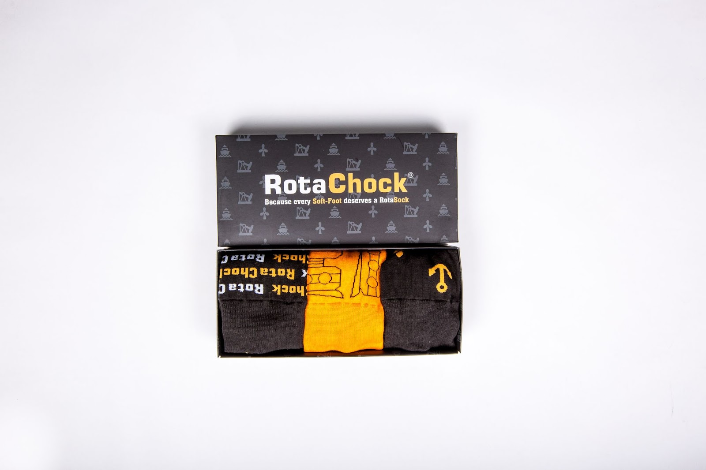Edgar & Cooper, an innovative dog food company, leveraged their vibrant brand identity to create custom Christmas jumpers for their team, influencers, and key partners. The focus was on ensuring that the colors and design were perfectly aligned with their brand, resulting in a unique and highly coveted item. The jumpers quickly became a collector's item, further enhancing Edgar & Cooper's brand presence and community engagement. This campaign demonstrated the power of thoughtful and well-executed branding in creating long-lasting connections.
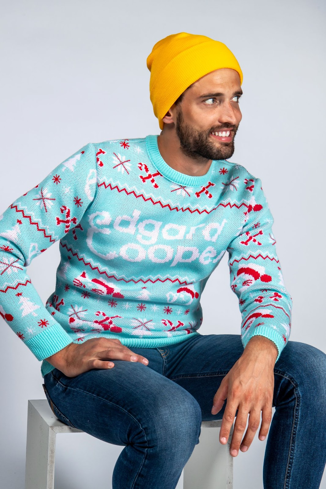Sint Bernardus, an iconic Belgian beer brand, celebrated the festive season by launching a limited-edition Christmas jumper. Available through their popular merchandise webshop, the jumper was designed to complement their special Christmas beer. The limited availability created a sense of exclusivity, and the jumpers quickly sold out, becoming a must-have item for beer enthusiasts. This campaign not only drove sales but also reinforced the brand's connection with its loyal customer base, making it a highlight of the holiday season.
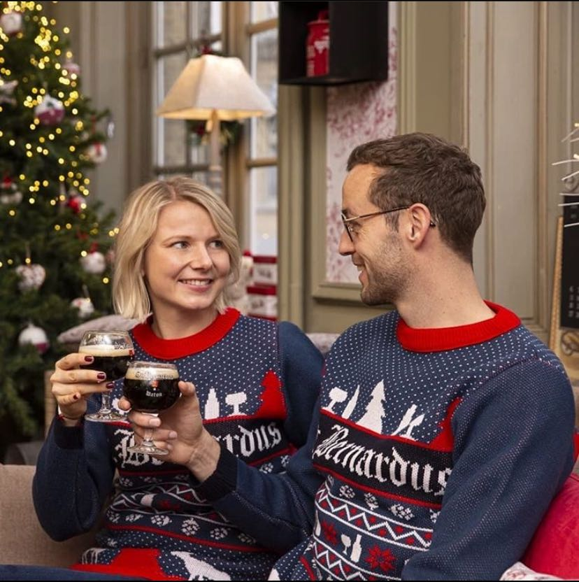
Looking to start dressing your team?
Want to discuss a project? Interested in
visiting one of our offices? Let us know!